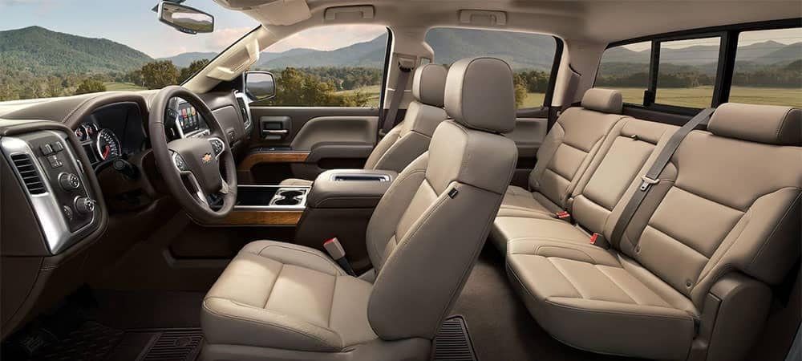
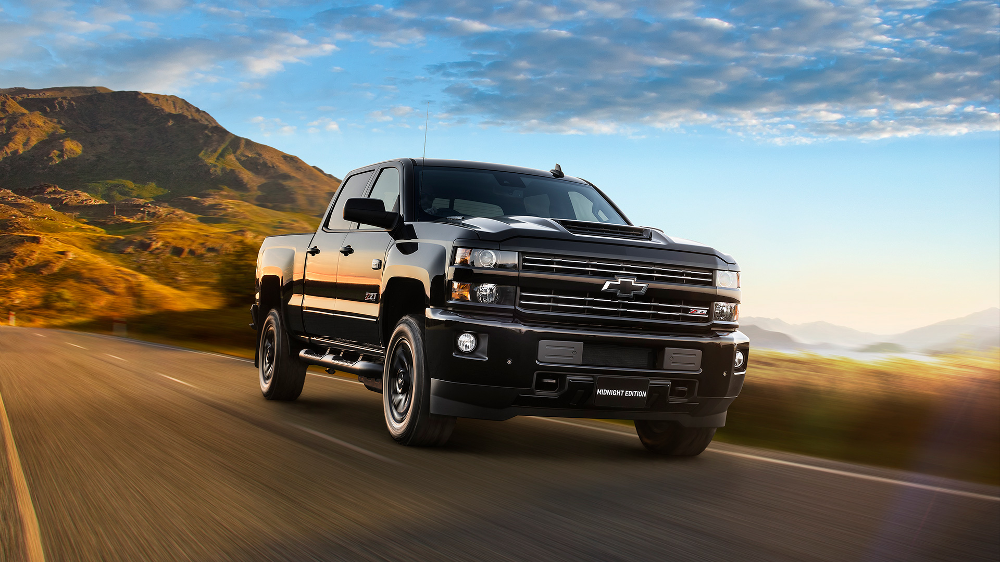

The Chevy Silverado has a comfortable and slick looking interior. The interior has high
quality materials. The interior is spacious and comfortable for all people to drive in. The crew cab can
hold up to 6 people comfortably. The seats can be heat adjusted and heated steering wheels are available.
Silverados are immediately noticed to be comfortable and quiet.

Standard features in the Silverado include a rearview camera, Teen Driver, and Chevy's
Infotainment 3 system with a 7-inch touch screen, Bluetooth, USB port, a six-speaker audio system, Apple
CarPlay, and Android Auto. Available features include a sunroof, dual-zone automatic climate control,
keyless entry, remote start, two 120-volt power outlets (one located in the bed), three additional USB ports,
wireless device charging, a seven-speaker Bose audio system, satellite radio, HD Radio, a Wi-Fi hot spot,
and an upgraded Infotainment 3 system with an 8-inch HD touch screen and navigation.

The exterior of the Chevy Silverado is beautiful as well. The Silverado has 6 main exterior
colors: red, silver metallic, white, black, graphite metallic, blue metallic. The exterior of the Silverado
is known to look chic but tough at the same time.